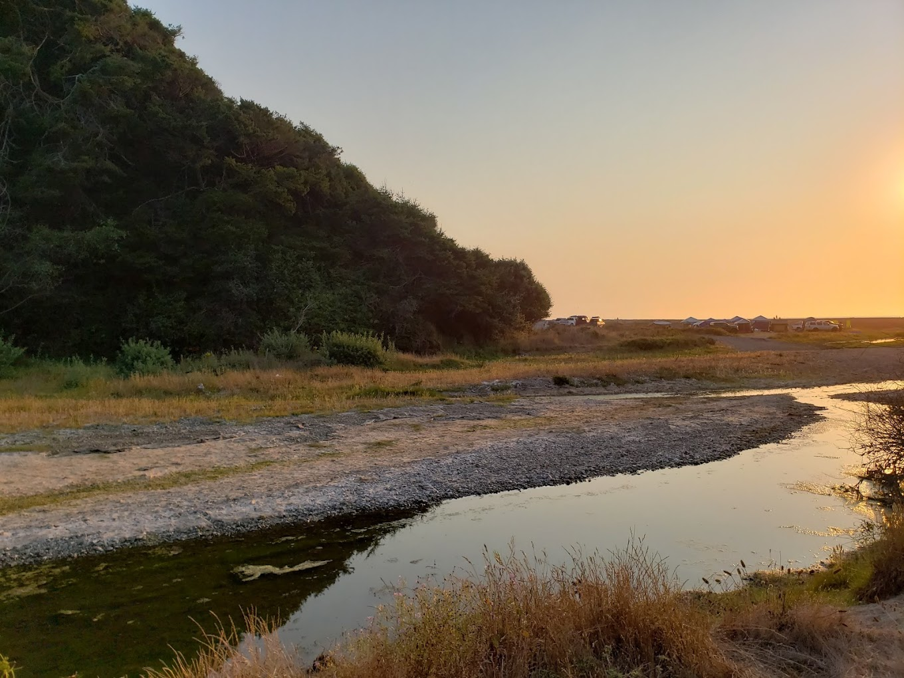

I've been planning a road trip for myself ever since I started learning to drive. You can view the itinerary at this link. I'm in love with the Pacific North West and California. I was born and raised in Southern California and grew up going on roadtrips all over California. In highschool I used to watch vlogs of road trips on youtube and came across a video of someone going to the Kings Range National Forest in Northwest California. There's a little beach accessible only by a dirt road that is absolutely beatuiful. It's flanked by the mountains that creep up right on the shoreline. Below is a picture I grabbed from Google Maps.
